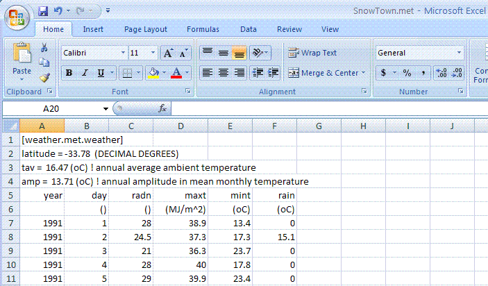

APSIM met files consist of a section name, which is always weather.met.weather, several constants consisting of name = value, followed by a headings line, a units line and then the data. Spacing in the file is not relevant. Comments can be inserted using the ! character.
At a minimum three constants must be included in the file: latitude, tav and amp. The last two of these refer to the annual average ambient temperature and annual amplitude in mean monthly temperature.
The met file must also have a year and day column (or date formatted as yyyy/mm/dd), solar radiation (MJ/m2), maximum temperature (oC), minimum temperature (oC) and rainfall. The column headings to use for these are year and day (or date), radn, maxt, mint, rain.
Other constants or columns can be added to the file. These then become available to APSIM as variables that can be reportted or used in manager script.
Example met file:
weather.met.weather
latitude = -33.78 (DECIMAL DEGREES)
tav = 16.47 (oC) ! annual average ambient temperature
amp = 13.71 (oC) ! annual amplitude in mean monthly temperature
| year |
day |
radn |
maxt |
mint |
rain |
| () |
() |
(MJ/m^2) |
(oC) |
(oC) |
(mm) |
| 1991 |
1 |
28.0 |
38.9 |
13.4 |
0.0 |
| 1991 |
2 |
24.5 |
37.3 |
17.3 |
15.1 |
To create one of these files in Microsoft EXCEL, open EXCEL and enter data into columns like this:

It is important that the column widths are a bit wider than the data in them. Notice in the figure the maxt column is wider than it needs to be.
The next step is to save the file as a Formatted Text (Space delimited)(*.prn) file, giving it a .met file extension. It is recommended that you keep your toolboxes, met files etc in a folder not under the APSIM installation directory. Perhaps you could create a folder called c:/apsim_toolboxes for storing these types of files.
Easy way to calculate the tav and amp constants
The software team provides a tool called TAV_AMP that will calculate these 2 constants and insert them into a met file. DOWNLOAD
Full instructions for using the tool: TAV_AMP manual